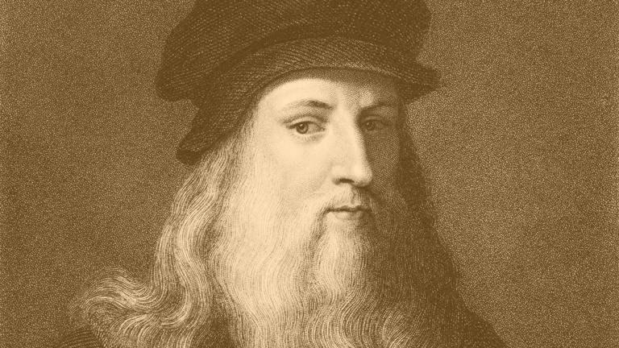

Dr. Norman Borlaug
The epitome of a “Renaissance man”.

The Lucan portrait of Leonardo da Vinci is a late 15th or early 16th century portrait of a man that was recently discovered in a cupboard of a private house in Italy. It strongly resembles a portrait of Leonardo da Vinci held by the Uffizi Gallery. The painting was previously thought by its owners to represent Galileo but on its discovery in 2008 a claim was made that it is a self-portrait by Leonardo da Vinci.
- 1452 - Leonardo is born on April 15 in the village of Anchiano, near the town of Vinci.
- 1467 - At 15 Leonardo is sent to Florence to work as apprentice to Andrea De Verrocchio.
- 1472 - 20 year-old Leonardo is accepted into the painters' guild of Florence.
- 1476 - Leonardo is accused of sodomy; he is publicly humiliated although the charges are later dropped.
- 1478 - The Annunciation is painted. The work, initially credited to Da Vinci, is now believed to have been painted by Lorenzo di Credi.
- 1481 - Leonardo begins work on The Adoration of the Magi, an altarpiece for the Monastery of San Donato at Scopeto. He sketches many studies.
- 1482 - Leonardo moves to Milan to work in the service of the city's duke, Ludovico Sforza. He gains the title of "painter and engineer of the duke.
- 1483 - Leonardo paints the Virgin of the Rocks.
- 1485 - Leonardo paints Lady with an Ermine.
- 1495 - Leonardo begins work on The Last Supper in the refectory of the convent of Santa Maria delle Grazie in Milan.
- 1498 - The Last Supper is completed.
- 1499 - With the duke Ludovico Sforza'a fall from power, Da Vinci leaves Milan and spends a short time in Venice.
- 1500 - Leonardo begins painting the Virgin and Child with Saint Anne, a project that he only finishes after 10 years.
- 1503 - Leonardo is commissioned to paint the Mona Lisa.
- 1515 - Leonardo paints St. John the Baptist.
- 1519 - May 2, Leonardo dies in France.